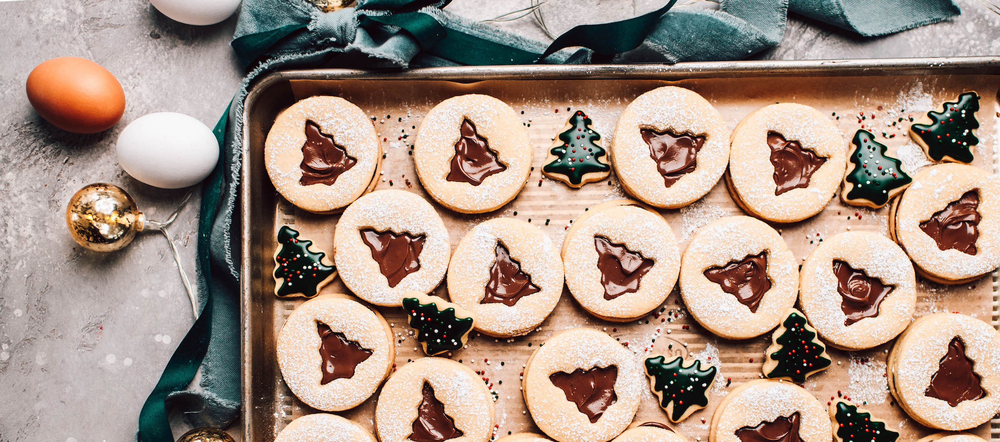

Chocolate Hazelnut Linzer Cookies

Ingredients
- 226g salted butter, room temp
- 100g light brown sugar
- 50g granulated sugar
- 2 large eggs
- 1 tsp vanilla bean paste
- 1/2 tsp Almond extract paste
- 100g Almond flour
- 375g AP flour
- Nutella or any Hazelnut chocolate Spread
Directions
- In the bowl of your stand mixer with the paddle attachment,
cream the butter, brown sugar, and granulated sugar for 3 minutes.
Make sure to take the time to scrape down the bottom and sides of the bowl as needed
to ensure everything is being evenly mixed.
- Add the eggs, vanilla bean paste, and almond extract paste and mix for an additional minute,
or until the eggs are well incorporated.
- Add the almond flour, all purpose flour, baking powder, and salt.
Mix for about 3 minutes, or until the flour is fully incorporated and the dough begins
to pull away from the sides of the bowl.
- Cover and chill for at least 1 hour, up to overnight.
- When ready to bake, preheat the oven to 350 and line 2 cookie sheets with parchment paper.
- Split the dough in half, and sprinkle flour onto a sheet of parchment paper placed on top of a clean kitchen towel.
This is just to prevent the parchment from sliding all over your counter as you roll the dough out
- Sprinkle the top of the dough and your rolling pin with flour as well. Roll the dough out to about ¼” thick.
You want the cookies to be pretty thin as you will sandwich two cookies together. Once the dough is rolled out, pop it into the fridge for 5-10 minutes to firm up,
then cut circles with a cookie or biscuit cutter.
- Use an offset spatula to transfer the cookies onto a parchment lined cookie sheet, 12 cookies per sheet.
Use a cookie cutter smaller than the cut circles in the shape of your choice and cut it out of half of the cookies.
- Freeze the cut out shapes for 10 minutes, then bake at 350 for 10 minutes. Keeping the dough super cold will ensure that they don't spread while they bake and that the cookies line up perfectly when you sandwich them together.
- Let the cookies cool completely, then dust the half of the cookies with the cut outs with powdered sugar
- Invert the bottom cookies and spread 2 tsp of chocolate hazelnut spread almost to the edges in an even layer. Place the top cookie on and press lightly to seal.
- Enjoy at room temperature or chilled.